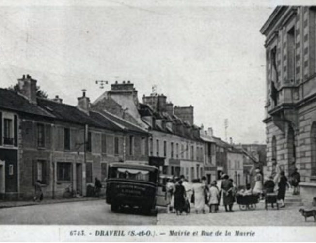
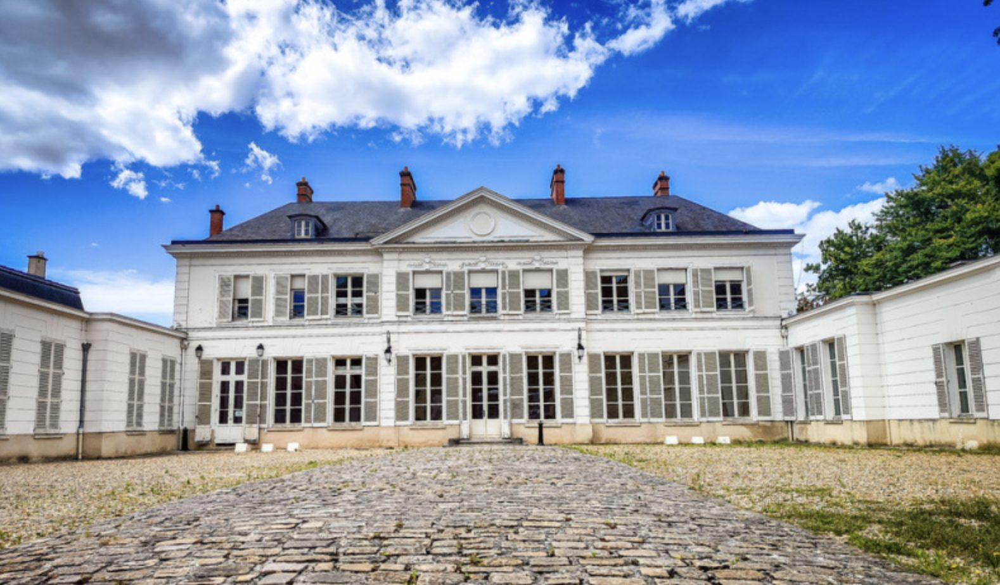
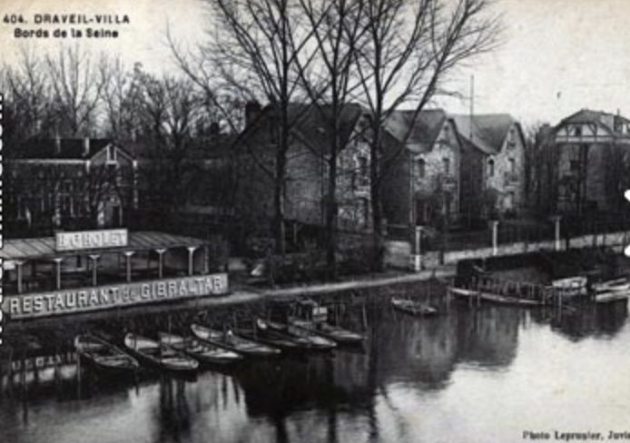
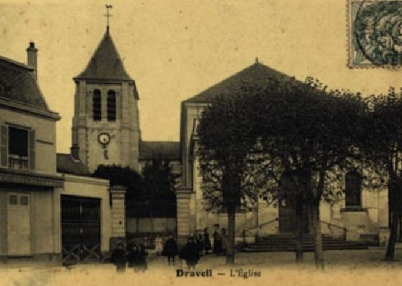
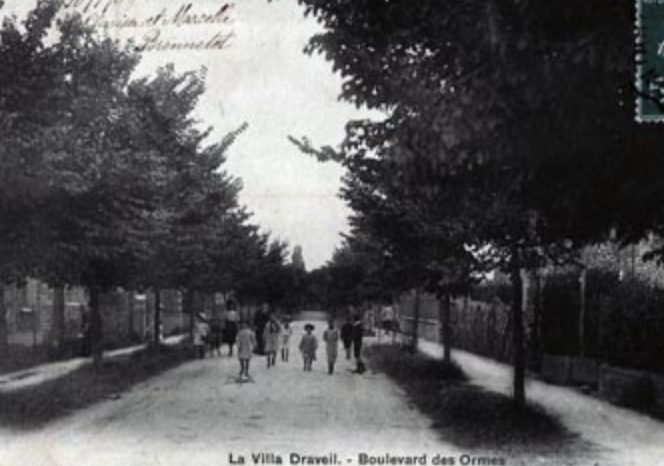
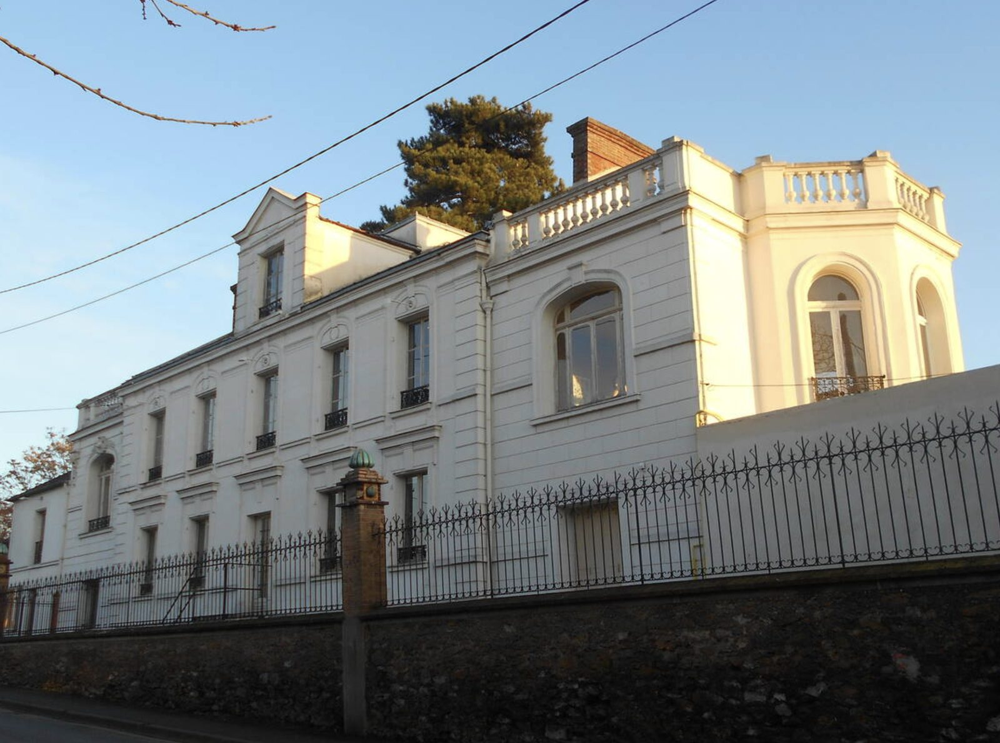
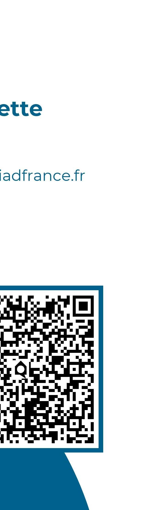

iad FRANCIS FERNANDES · CONSEILLER
Nichée entre la Seine et la forêt de Sénart, Soisy-sur-Seine a vu vivre les descendants de Marie Curie et inspiré Delacroix, Voltaire et Alphonse Daudet. Entre le château du Grand-Veneur et son église du XIIᵉ siècle, ce cachet particulier se reflète directement dans la valeur de votre bien. Francis Fernandes, conseiller iad du secteur, vous aide à l'évaluer avec précision.
Estimation basée sur les prix moyens constatés à Soisy-sur-Seine — une visite reste nécessaire pour un chiffrage précis.
De l'église Notre-Dame au château du Grand-Veneur, en passant par les bords de Seine et la forêt de Sénart.






iad combine outils digitaux performants, visibilité nationale et accompagnement personnalisé par un conseiller qui connaît vraiment vos quartiers.
Votre annonce diffusée sur les plus grands portails immobiliers, portée par la notoriété du 1er réseau de mandataires en France.
Un seul interlocuteur du premier contact à la remise des clés, disponible et joignable directement — pas d'agence, pas de standard.
Du centre ancien à la Pelouse, en passant par Chalandray : une lecture fine des prix pratiqués quartier par quartier.

Agent mandataire iad — Essonne & région Île-de-France
Plus de 18 ans de présence sur le secteur de Soisy-sur-Seine et ses environs. Un interlocuteur unique, joignable directement, pour vendre ou estimer votre bien dans les meilleures conditions.
Voir ma fiche conseiller iadSoisy-sur-Seine se découpe en quartiers bien distincts, chacun avec son propre marché immobilier.
Vous êtes plutôt à Draveil, Vigneux-sur-Seine ou Ris-Orangis ? Voir l'estimation pour Draveil →
Une première estimation indicative en 30 secondes, sans engagement.
Francis se déplace pour affiner l'estimation selon l'état réel et les atouts du bien.
Mise en valeur, diffusion multi-portails et sélection des acquéreurs qualifiés.
Suivi jusqu'à l'acte final, avec un seul interlocuteur du début à la fin.
Nichée entre la Seine et la forêt de Sénart, Soisy a toujours attiré artistes et penseurs — Delacroix, Voltaire et Edmond de Goncourt y ont puisé leur inspiration, et Alphonse Daudet y a situé un épisode de "La Petite Paroisse". La maison qu'occupèrent Marie Curie puis ses descendants Joliot-Curie fait aussi partie de ce patrimoine discret.
Recommandez Francis à votre entourage et touchez jusqu'à 500 € en moyenne une fois la vente finalisée. Un système simple, ouvert à tous, sans obligation d'être professionnel de l'immobilier.
"Disponible, réactif, et un vrai suivi jusqu'à la signature. Rien à redire."
"Francis a été disponible, réactif et clair dès le départ, ce qui nous a rassurés à chaque étape de notre achat."
"Estimation rapide et honnête, sans survente. Francis connaît vraiment le secteur."
Estimation gratuite, sans engagement, réalisée par un conseiller iad présent sur votre secteur.
Ou contactez directement Francis sur WhatsApp